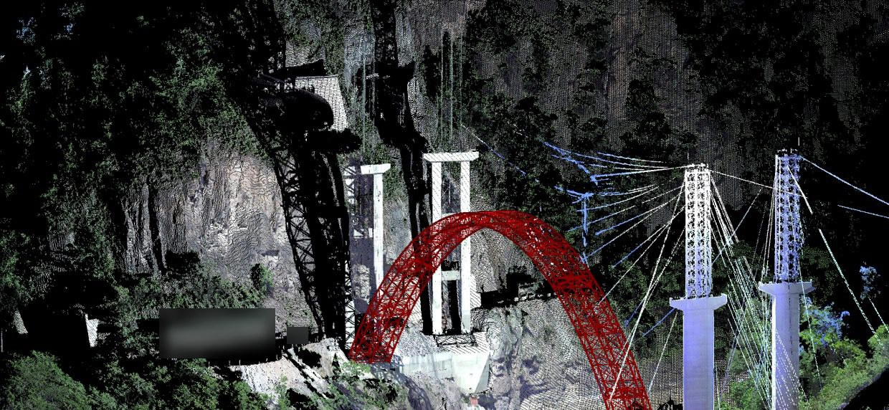

2019–2021 · Commissioned research
Three-dimensional monitoring of a long-span mountain arch bridge
Laser scanning and BIM used to follow a long-span steel arch through construction in a mountain gorge, so that the measured geometry could be compared with the design model at each stage and turned into a structural model that can be audited. Commissioned by the expressway owner and contracted through the university where I then taught.
Role: Principal investigator; the contract states that I had full responsibility for the project.
construction monitoringlaser scanning
Image: point cloud of the arch and temporary cable-crane masts during construction. A site sign has been blurred.
2022–2025 · Provincial research project
A digital twin that is corrected by measurement
A model of a long-span river bridge that is updated from measurement while the bridge is in service, rather than drawn once. Point-cloud completion and segmentation feed a finite element model whose modal frequencies and static response are checked against field tests and recalibrated. Completed and submitted for closure in September 2025.
Role: Principal investigator on a general project selected in open competition by the Natural Science Foundation of Chongqing.
model updatingdigital twin
2024– · National research programme
Large-scale experiments on coupled hazards for long-span structures
A national competitive R&D programme building large-scale experimental models of how long-span structures behave when more than one hazard acts at once, and reconstructing those scenarios from measured data.
Role: Technical lead on the university side.
multi-hazardlarge-scale testing
2024–2026 · National research grant
Bridges at high altitude and in cold regions
A key project of the National Natural Science Foundation of China on how very large bridges in high-altitude, cold regions are damaged, and how to monitor them and give early warning.
Role: Key researcher, named in the project team.
cold regionsearly warning
2019–2023 · Provincial research programmes
Fatigue monitoring and BIM-based safety diagnosis
Two provincial programmes in Jiangsu: fatigue performance monitoring for major civil infrastructure, an international-cooperation programme (2021–2023), where I was responsible for software development and system integration; and BIM and big-data diagnosis of structural safety in buildings (2019–2022), where I was responsible for BIM development.
Role: Key member of the project team in both, with the responsibilities named above.
fatigue monitoringstructural safety